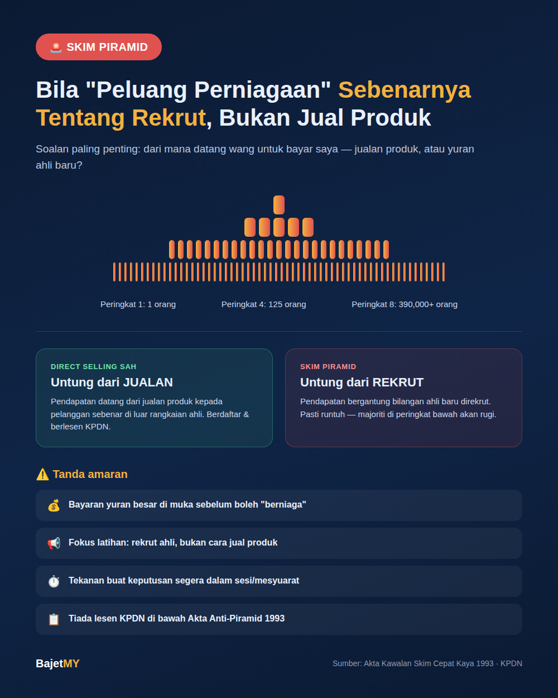

"Join je dulu, lepas tu ajak kawan-kawan. Senang nak dapat pendapatan pasif." Ramai rakyat Malaysia pernah dijemput ke "peluang perniagaan" sebegini — mesyuarat penuh semangat, testimoni pendapatan tinggi, dan tekanan untuk sertai segera. Sesetengah memang perniagaan jualan langsung (direct selling) yang sah. Tetapi ramai juga sebenarnya skim piramid — dan bezanya boleh menentukan sama ada anda untung atau rugi besar.
Bagaimana nak bezakan?
Soalan paling penting untuk tanya: "Dari mana datangnya wang untuk bayar saya — jualan produk kepada pelanggan luar, atau yuran ahli baru yang saya rekrut?"
| Ciri | Direct Selling Sah | Skim Piramid |
|---|---|---|
| Sumber pendapatan utama | Jualan produk kepada pengguna sebenar | Yuran/pelaburan ahli baru yang direkrut |
| Fokus mesyuarat/latihan | Cara jual produk dengan berkesan | Cara rekrut lebih ramai ahli |
| Produk | Ada nilai pasaran sebenar, harga munasabah | Sering "sekadar tiket masuk" — harga melambung, jarang dijual berasingan |
| Pendapatan ahli baru | Bergantung usaha jualan sendiri | Bergantung bilangan rekrut di bawah mereka |
| Kemampanan jangka panjang | Boleh bertahan selagi ada permintaan produk | Mesti runtuh — matematik piramid tidak boleh dielakkan |
Kenapa skim piramid PASTI runtuh (bukan mungkin — pasti)
Ini bukan pandangan, ini matematik mudah. Katakan setiap ahli perlu rekrut 5 orang untuk "naik pangkat":
- Peringkat 1: 1 orang
- Peringkat 2: 5 orang
- Peringkat 3: 25 orang
- Peringkat 4: 125 orang
- Peringkat 5: 625 orang
- Peringkat 8: lebih 390,000 orang
- Peringkat 12: lebih 244 juta orang — melebihi populasi Malaysia berkali-kali ganda
Dalam masa beberapa peringkat sahaja, skim akan kehabisan manusia baru untuk direkrut. Apabila rekrutmen berhenti, majoriti ahli di peringkat bawah — iaitu majoriti besar peserta — akan rugi wang mereka. Hanya segelintir di peringkat atas (biasanya pengasas dan pelopor awal) yang benar-benar untung.
Tanda amaran skim piramid
- ✅ Ditekankan "peluang pendapatan pasif" atau "kerja dari rumah, untung besar" tanpa penjelasan jelas bagaimana wang dijana
- ✅ Bayaran yuran/pakej permulaan yang besar sebelum boleh mula "berniaga"
- ✅ Pendapatan berstruktur ikut tahap/level berdasarkan bilangan rekrut, bukan jualan
- ✅ Tekanan sosial kuat — ahli keluarga, kawan lama tiba-tiba ajak sertai "peluang emas"
- ✅ Testimoni pendapatan tinggi tanpa penyata kewangan sebenar atau bukti jualan
- ✅ Produk (jika ada) jarang dijual di luar rangkaian ahli sendiri — kebanyakan "pelanggan" adalah ahli sendiri yang beli untuk kekalkan status keahlian
Rangka undang-undang di Malaysia
Skim cepat kaya dan piramid adalah menyalahi undang-undang di Malaysia di bawah Akta Kawalan Skim Cepat Kaya 1993 (Anti-Pyramid Scheme Act). Perniagaan jualan langsung yang sah pula perlu berdaftar dan berlesen di bawah Kementerian Perdagangan Dalam Negeri dan Kos Sara Hidup (KPDN) melalui Akta Jualan Langsung dan Skim Anti-Piramid 1993.
Semak dahulu: Sebelum sertai mana-mana "peluang perniagaan", semak status lesen syarikat di laman rasmi KPDN. Syarikat direct selling yang sah wajib ada lesen ini — ketiadaan lesen adalah tanda amaran besar.
Cara elak terjebak
- Tanya soalan sumber pendapatan secara terus — jika jawapan mengelak atau tumpu kepada "rekrut lebih ramai", itu tanda bahaya
- Semak sama ada produk boleh dijual kepada orang luar yang bukan ahli, dengan harga yang munasabah berbanding pasaran
- Jangan buat keputusan dalam mesyuarat/sesi bertekanan — skim piramid selalu tekankan "keputusan segera" untuk elak anda sempat fikir/semak
- Semak lesen KPDN untuk syarikat direct selling
- Elak bayar yuran besar di muka sebelum faham sepenuhnya model perniagaan
- Ingat statistik sebenar — dalam kebanyakan skim piramid, lebih 90% peserta rugi wang; hanya segelintir di peringkat atas untung
Dah terlanjur sertai?
Berhenti rekrut ahli baru dengan segera — setiap ahli baru yang anda bawa masuk berisiko rugi wang mereka sendiri. Laporkan kepada KPDN atau pihak berkuasa berkaitan, dan kongsi maklumat ini dengan ahli keluarga/rakan yang mungkin dijemput ke skim sama.
Ringkasan
Beza utama antara perniagaan jualan langsung yang sah dan skim piramid adalah sumber pendapatan sebenar: jualan produk kepada pengguna luar (sah) berbanding yuran ahli baru yang direkrut (piramid — dan menyalahi undang-undang di Malaysia). Skim piramid pasti runtuh disebabkan matematik asas, bukan nasib buruk — dan apabila ia runtuh, majoriti peserta di peringkat bawah akan rugi. Sentiasa tanya "dari mana datang wang untuk bayar saya?" sebelum sertai mana-mana peluang.
Sumber
- Akta Kawalan Skim Cepat Kaya 1993 (Anti-Pyramid Scheme Act), Malaysia
- Kementerian Perdagangan Dalam Negeri dan Kos Sara Hidup (KPDN) — Akta Jualan Langsung dan Skim Anti-Piramid 1993